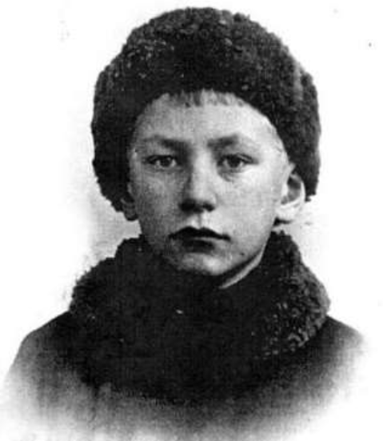
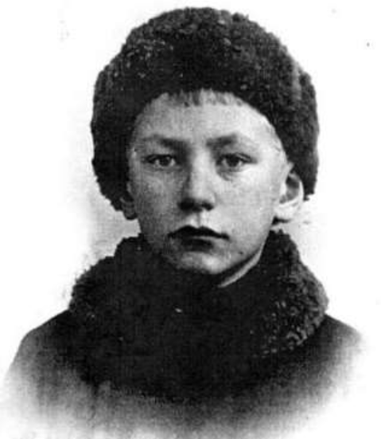
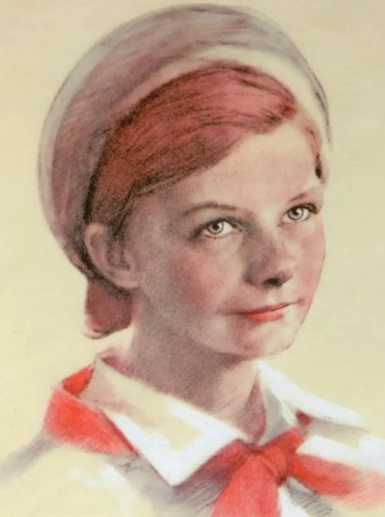
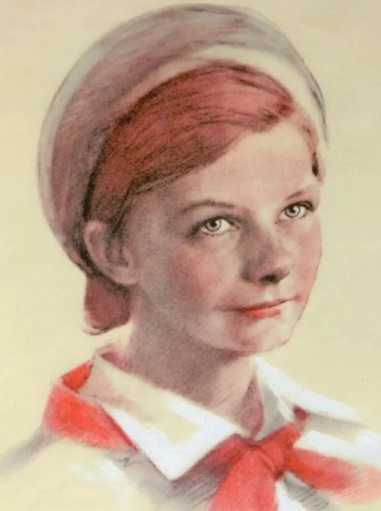

Добро пожаловать
Этот сайт посвящен детям-героям, которые пережили ужас блокады Ленинграда. Узнайте о жизни и подвиге каждого из этих героев. Нажмите на имя, чтобы узнать больше.
 


 


Дети-герои Ленинграда
Миша Тихомиров
Миша Тихомиров стал героем за свою храбрость и стойкость во времена блокады. В возрасте 8 лет он уже активно помогал выживать своему городу, несмотря на страшные условия.
Таня Савичева
Таня Савичева — символ детской стойкости и мужества в блокадном Ленинграде. Несмотря на тяжёлые условия и потери, она оставалась живым свидетельством выносливости и силы духа детей в те страшные годы.
Евдокия Завалия
Евдокия Завалия была примером мужества среди детей блокады Ленинграда. Несмотря на свой юный возраст, она активно помогала жителям города и выжила в этих условиях благодаря своей храбрости.
Лёня Голиков
Леонид Александрович Голиков (известный как Лёня Голиков) — пионер-герой, участник Великой Отечественной войны, партизан, Герой Советского Союза (посмертно).
Юта Бондаровская
Юта Бондаровская (Бондаровская Ия Сергеевна) — пионер-герой, партизанка 6-й Ленинградской партизанской бригады.
Нина Куковерова
Нина Петровна Куковерова — пионер-герой, партизанка, разведчица Великой Отечественной войны, замучена и убита фашистами в декабре 1943 года.